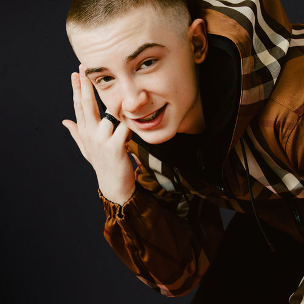

Tion Wayne
Also know as Dennis Junior Odunwo
is a British rapper, songwriter and DJ from Edmonton, North London.
Russ Millions
Also known as Shylo Batchelor Ashby Milwood
he released his single "Gun Lean" on Virgin Records. The track peaked at number 9 on the UK Singles Chart, becoming the first UK drill track to reach the top 10.

Central Cee
Also known as Oakley Neil H T Caesar-Su
is a British rapper from Shepherd's Bush, London. His first mixtape Wild West was released in March 2021, and debuted at two on the UK Albums Chart.

Arrdee
Also known as Riley Davies
He saw success being featured on the remix of Russ Millions and Tion Wayne's song "Body", which topped the charts in various countries including the UK.